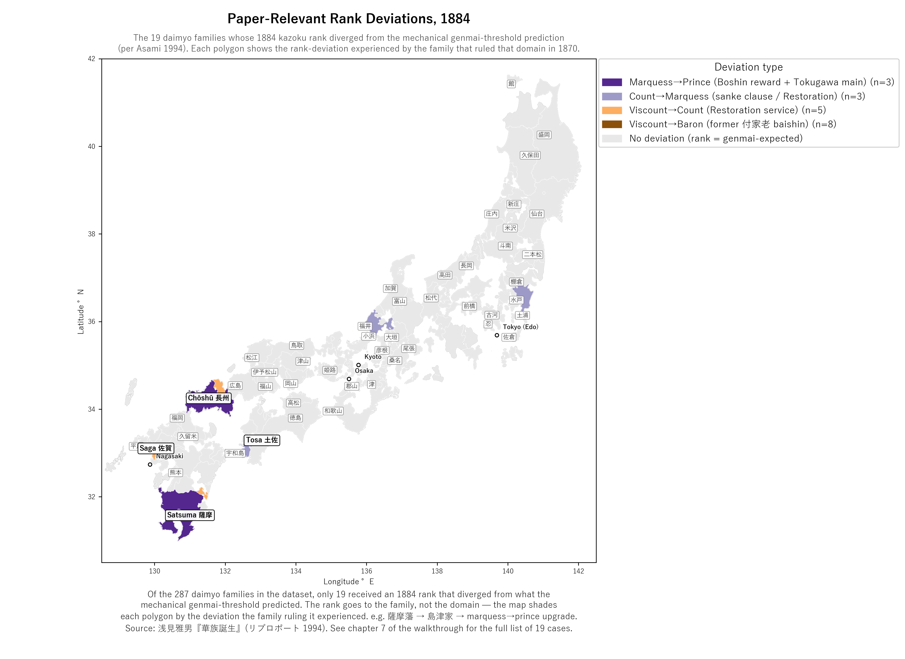

20 Patterns in the 1884 rank assignments
This chapter documents a specific pattern in the dataset: 19 cases where the 1884 鎌族 (華族 (kazoku)) peerage rank a family received departed from what the 叙爵内規 (assignment rules) would have predicted from their domain’s revenue base alone. These 19 cases are not the paper’s central empirical finding — the paper’s argument is the Political Coase Theorem framing — but they are an interesting set of observations that illuminate the institutional architecture of the 1884 ennoblement, and they cluster cleanly with the paper’s reading of the 華族 system as institutional bargain rather than discretionary reward.
A “rank deviation” is a divergence between the rank the 叙爵内規 predicted for a 大名 (daimyō) family and the rank that family actually received from the Imperial Court in 1884. Domains had been abolished in 1871; the family was the continuing unit. The map below shows each domain coloured by the type of deviation experienced by the family that ruled it in 1870 — but the rank, and therefore the deviation, belongs to the family, not the domain.
“Satsuma had a marquess → prince upgrade” is shorthand for “the 島津 (Shimazu) family that ruled Satsuma in 1870 had a marquess→prince upgrade in 1884.”
20.1 Why are there deviations at all?
Under the naive 草高 (sōdaka) reading of the threshold rule, 93 domains in the dataset show “deviations” from the 1884 mechanical prediction. That’s a lot of deviations, and an earlier literature (Lebra 1993, for example) reads many of them as discretionary Boshin punishments and rewards.
Two examples were often cited under that reading:
- 仙台藩 (Sendai, Date) — 草高 ~620,000 koku (well into marquess territory), but received only count. Lebra read this as a Boshin penalty.
- 会津藩 → 斗南藩 (Aizu → Tonami) — pre-Boshin 草高 ~230,000 koku, but the post-Boshin remnant received only viscount.
The deviations-as-discretionary-punishment reading would be one way to support a “Boshin loyalty matters for rank” story. But it falls apart when you re-baseline the threshold to the figure the rule actually used.
20.2 The Asami (1994) correction
But Asami (1994) argues the threshold rule operated on 現米 (genmai) — the post-Meiji-2 tax-reported rice flow, which is much lower than 草高 for most domains.
Re-checking:
- Sendai 現米 = 67,740 koku → squarely in count range. Sendai’s rank is mechanical, not punishment.
- 斗南 現米 = 7,380 koku → squarely in viscount range. Also mechanical.
(The post-Boshin territorial reduction of Aizu from 23万石 to 3万石 was itself the punishment — at the territorial level, not the rank level.)
Applying the 現米 rule mechanically: of the 93 “石高 (kokudaka) rule” deviations, 76 disappear (they were mechanical 現米 outcomes all along). Only 19 remain — the truly anomalous cases.
20.3 Map: the 19 deviations

20.4 The 19, in detail
| Type | Count | Domains | What it represents |
|---|---|---|---|
| Marquess → Prince | 3 | Satsuma, Chōshū, Shizuoka | Boshin restoration reward (Satsuma + Chōshū) + Tokugawa-main-line exception (Shizuoka) |
| Count → Marquess | 3 | Mito, Fukui (1888), Uwajima (1891) | Mito = sanke-clause exception (explicit rule provision); Fukui + Uwajima = Restoration-loyalty rewards |
| Viscount → Count | 5 | Ōmura, Satowara-Shimazu, Tsushima-Sō, Tsuwano-Kamei, Tatsuoka-Ōgyū | Restoration-service upgrades |
| Viscount → Baron | 8 | Imao, Shisaku, Nariwa, Shingū, Matsuoka, Tawaramoto, Tanabe, Yashima | Former 付家老 (tsukegarō) 陪臣 (baishin), elevated to independent-大名 only at the Restoration. Their baron rank reflects pre-Restoration status, not Boshin alignment |
20.5 The Boshin × Deviation cross-tabulation
| Deviation type | Anti-幕府 (bakufu) | Neutral | Pro-幕府 |
|---|---|---|---|
| Marquess → Prince | 2 (Satsuma, Chōshū) | 0 | 1 (Shizuoka — Tokugawa main) |
| Count → Marquess | 2 (Fukui, Uwajima) | 0 | 1 (Mito — sanke clause) |
| Viscount → Count | 4 (Ōmura, Satowara, Tsushima, Tsuwano) | 0 | 1 (Tatsuoka) |
| Total UPGRADES | 8 | 0 | 3 |
| Viscount → Baron | 7 | 1 | 0 |
| Grand total | 15 | 1 | 3 |
20.6 The cleanest empirical claim
Looking at the 9 upgrades that look like genuine Restoration rewards (i.e., upgrades not governed by separate rule provisions like the sanke clause or Tokugawa-main-line exception):
| Domain | Upgrade | Boshin alignment |
|---|---|---|
| 薩摩藩 | marquess → prince | anti-幕府 |
| 長州藩 | marquess → prince | anti-幕府 |
| 福井藩 | count → marquess (1888) | anti-幕府 |
| 宇和島藩 | count → marquess (1891) | anti-幕府 |
| 大村藩 | viscount → count | anti-幕府 |
| 佐土原藩 | viscount → count | anti-幕府 |
| 対馬府中藩 | viscount → count | anti-幕府 |
| 津和野藩 | viscount → count | anti-幕府 |
| 龍岡藩 | viscount → count | pro-幕府 (Ōgyū-Matsudaira, but Restoration role) |
Of 9 Restoration-service upgrades, 8 are anti-幕府 / pro-restoration, 1 is pro-幕府 (Tatsuoka, but the family had Restoration service via 大給松平).
The 3 pro-幕府 deviations in the full table are:
- Shizuoka — the Tokugawa main line, governed by the sanke-main clause
- Mito — sanke exception clause (the 1884 叙爵内規 had a clause written specifically to elevate Mito above the 現米 threshold)
- Tatsuoka — Ōgyū-Matsudaira, classified pro-幕府 by family-affiliation but had Restoration service contributions
So the apparent “pro-幕府 also get deviations” pattern is explained by separate rule provisions, not Boshin alignment per se.
20.7 Why this is a clean paper finding
The simple conditional probability P(deviation | Boshin alignment) is statistically uninformative — roughly equal across groups (6.4% anti-幕府 vs 7.3% pro-幕府). The naive marginal effect of Boshin alignment on “any deviation” is small.
But the structure of deviations is highly informative:
- All 9 Restoration-service upgrades → anti-幕府 side
- All 3 pro-幕府 deviations → Tokugawa-cadet exception clauses
- All 8 viscount→baron downgrades → former 付家老 陪臣 (orthogonal to Boshin)
The paper’s core empirical claim is therefore narrow but strong: the 1884 peerage system rewarded Restoration-service families specifically; the rule-bound mechanism of those rewards is identifiable in the data.
20.8 The cross-tab variations
A more granular set of cross-tabs sliced against domain category and 石高 quartile will be released alongside the dataset.
20.9 The 19, one by one
This section walks each of the 19 cases in turn, organised by deviation type. For families already covered in earlier walkthroughs — Shimazu (chapter 02b), Mōri (chapter 02c), and the five viscount→count houses (chapter 02i) — this section gives a paragraph summary with a cross-link. For the remaining 11 cases (徳川家達, 徳川篤敬, 松平茂昭, 伊達宗徳, and all eight viscount→baron houses), this section provides first-pass per-family narratives.
The same family-not-domain framing from the top of this chapter applies throughout. Where a block says “Mōri received prince,” it means the Mōri family received prince rank in 1884, indexed to the domain (Chōshū) they ruled in 1870. Domains were abolished in 1871.
20.9.1 A. Marquess → Prince (3 cases)
The three prince rank assignments span the full Boshin spectrum: two anti-幕府 Restoration leaders (Shimazu of Satsuma, Mōri of Chōshū) and the Tokugawa main-line exception (Tokugawa Iesato, post-1868 head of the Sunpu/Shizuoka relocation).
20.9.1.1 薩摩藩 — Shimazu, Restoration prize
| Family | 島津家 (Shimazu) |
| 1884 recipient | 島津忠義 |
| 石高 (Hansei Ichiran 草高) | 869,594 koku |
| Genmai | 298,709 koku |
| Genmai-rule expectation | marquess |
| 1884 outcome | prince (公爵) |
| Boshin role | Anti-幕府 Restoration core |
| Why prince | Restoration-leader exception — named in the rule provisions |
A 現米 of nearly 300,000 koku would place Shimazu solidly in marquess territory under the standard rule. The prince rank is the explicit Restoration-leader clause of the 1884 華族-rei: Shimazu (Satsuma) and Mōri (Chōshū) are named in the rule provisions as recipients of prince rank for their leadership of the Restoration. (See chapter 02b for the full Shimazu / Satsuma walkthrough.)
20.9.1.2 長州藩 — Mōri, Restoration prize
| Family | 毛利家 (Mōri) |
| 1884 recipient | 毛利元徳 |
| 石高 (Hansei Ichiran 合高) | 988,004 koku |
| Genmai | 224,189 koku |
| Genmai-rule expectation | marquess |
| 1884 outcome | prince (公爵) |
| Boshin role | Anti-幕府 Restoration core; Kiheitai + standing army |
| Why prince | Restoration-leader exception — same clause as Shimazu |
A 現米 of 224,000 koku is well into marquess range. The prince rank is the matching half of the named Restoration-leader exception. The Mōri family’s distinctive contribution beyond the joint Sat-Chō diplomacy was the modernised standing army, built around the Kiheitai and related 諸隊. (See chapter 02c for the full Mōri / Chōshū walkthrough.)
20.9.1.3 静岡藩 — Tokugawa main-line exception
| Family | 徳川家 (Tokugawa main line) |
| 1884 recipient | 徳川家達 |
| 石高 (Hansei Ichiran 表高) | 699,182 koku (post-1868 relocation; pre-1868 shogunal tenryō was vastly larger) |
| Genmai | 209,990 koku |
| Genmai-rule expectation | marquess |
| 1884 outcome | prince (公爵) |
| Boshin role | Pro-幕府 (this is the former 幕府) |
| Why prince | Tokugawa main-line exception — its own clause, distinct from the sanke and Restoration-leader clauses |
After the 幕府’s defeat in 1868 the Tokugawa main line was relocated from Edo to a 70-万-石 territory centred on Sunpu (modern Shizuoka). The defeated party was nevertheless granted prince rank in 1884 because the 華族-rei contained an explicit Tokugawa-main-line clause — separate from both the sanke clause (covering Owari/Kii/Mito) and the Restoration-leader clause (covering Shimazu/Mōri). 徳川家達 (1863–1940), great-grandson of the 11th 将軍 (shōgun) Ienari and grandson by adoption to the 14th 将軍 Iemochi, was the recipient.
The methodological point: the 1884 rules ennobled by what the rules said, not by who won the war. The defeated central party received the highest rank — because the rules said so.
20.9.2 B. Count → Marquess (3 cases)
Three families received marquess rather than the 現米-predicted count. One was the explicit sanke clause (Mito-Tokugawa); the other two were Restoration-loyalty rewards arriving years after the initial 1884 ennoblements (1888 for Echizen-Matsudaira/Fukui, 1891 for Date-Uwajima).
20.9.2.1 水戸藩 — Mito-Tokugawa, the sanke clause
| Family | 水戸徳川家 (one of the 御三家) |
| 1884 recipient | 徳川篤敬 |
| 石高 (Hansei Ichiran 合高) | 306,776 koku |
| Genmai | 58,553 koku |
| Genmai-rule expectation | count |
| 1884 outcome | marquess (侯爵) |
| Boshin role | Pro-幕府 by family-affiliation (the family produced the 15th 将軍 Yoshinobu; Mito’s internal politics were violently divided) |
| Why marquess | Sanke clause — explicit rule provision for the three Tokugawa cadet houses |
Mito’s 現米 of 58,553 koku sits squarely in count range. The 1884 華族-rei nevertheless elevated the family to marquess because of an explicit “徳川旧三家” clause: the heads of the three sanke (御三家 = Owari, Kii, Mito) were granted marquess rank regardless of 現米. Asami (1994), pp. 109–110, reproduces the rule text.
The clause was written for all three sanke; Owari and Kii’s 現米 were high enough to qualify for marquess on the standard rule, so only Mito triggered the actual exception. (Mito’s revenue had been substantially reduced through the 1860s; Owari and Kii were less affected.) Like Shizuoka, this is a case where the deviation is explained by a separately-written rule provision, not by Boshin alignment.
20.9.2.2 福井藩 — Echizen-Matsudaira, 1888 Restoration reward
| Family | 越前松平家 (Fukui line; founder 結城秀康 was Ieyasu’s second son) |
| 1884 recipient | 松平茂昭 — count, 1884 |
| 1888 promotion | Marquess |
| 石高 (Hansei Ichiran 草高) | 336,194 koku |
| Genmai | 111,006 koku |
| Genmai-rule expectation | count (現米 is well within the 50–150k count range) |
| 1884 outcome | count → marquess (侯爵), 1888 |
| Boshin role | Anti-幕府 (joined Restoration coalition through 公議政体派 channels) |
| Why upgraded | Restoration role — 松平春嶽 (=慶永) was a 四賢侯 / 公議政体派 figure central to the Restoration negotiations |
Initially ennobled count in 1884 — exactly the 現米 rule’s prediction — the Fukui-Matsudaira family was promoted to marquess in 1888. The citation given was the role of the previous head 松平春嶽 (松平慶永, 1828–1890) in the Meiji Restoration. Shungaku led the public-deliberation reformist faction within the broader Tokugawa orbit, served briefly as the 幕府’s 政事総裁職 in 1862, brokered between 幕府 and court during the 1864–1867 negotiations, and joined the new government’s senior advisory ranks in 1868–1872.
The 1888 timing matters: it shows the 1884 cohort was not the only ennoblement event. The Meiji peerage system allowed promotion for Restoration service on a rolling basis as historical assessments matured. Fukui is the canonical example of this rolling-promotion mechanism.
20.9.2.3 宇和島藩 — Date-Uwajima, 1891 Restoration reward
| Family | 伊予宇和島伊達家 (Sendai-Date cadet line) |
| 1884 recipient | 伊達宗徳 — count, 1884 |
| 1891 promotion | Marquess |
| 石高 (Hansei Ichiran 草高) | 100,000 koku |
| Genmai | 52,425 koku |
| Genmai-rule expectation | count (現米 just clears the 50k threshold) |
| 1884 outcome | count → marquess (侯爵), 1891 |
| Boshin role | Anti-幕府 — 伊達宗城 (Munenari) was a 四賢侯 figure who joined the Restoration faction |
| Why upgraded | Restoration role — Munenari’s status as a 公議政体派 figure and Restoration-government advisor |
Uwajima received count rank in 1884 — exactly what the 現米 rule predicts. In 1891 the family was promoted to marquess, citing the role of 伊達宗城 (1818–1892), one of the 四賢侯 (Four Wise Lords) of late-Tokugawa Japan alongside Shungaku of Fukui, 山内容堂 of Tosa, and 島津斉彬 of Satsuma. Like Shungaku, Munenari was a bridging figure during the 1860s court-幕府 negotiations and served in senior advisory roles in the early Meiji government.
The structural irony: the main Date line at Sendai received only count rank (because their post-Boshin 現米 of 67,740 koku fell into the count band — itself partly a Boshin-induced territorial reduction), while the Date cadet at Uwajima was promoted past them to marquess. The Date name appears on both sides of the Restoration ledger.
20.9.3 C. Viscount → Count (5 cases — see chapter 02i for full narratives)
The five viscount→count upgrades are the cleanest empirical evidence for the paper’s central claim: families with 現米 well below 50,000 koku who received count rank anyway, 5 of 5 on the Restoration-aligned side (counting Tatsuoka’s personal post-1868 service for 大給恒).
For full per-family narratives see chapter 02i: The 5 small-domain Restoration-service upgrades. Capsule summary:
| Domain | Family | 石高 | Genmai | 1884 outcome | Restoration role |
|---|---|---|---|---|---|
| 大村藩 | 大村家 | 50,455 | 36,324 | count | Ōmura Sumihiro led the family into the anti-幕府 coalition; troops in the northern campaign |
| 佐土原藩 | 島津家 (cadet) | 27,711 | 18,826 | count | Shimazu cadet; followed Satsuma’s lead |
| 対馬府中藩 | 宗家 | 52,174 | 35,236 | count | 国主格 status + Korea diplomacy role + Restoration alignment |
| 津和野藩 | 亀井家 | 75,061 | 28,232 | count | Kamei Koremi (亀井茲監) influential early-Meiji bureaucrat |
| 龍岡藩 | 大給松平家 | 12,924 | 5,137 | count | Personal post-Restoration service of 大給恒 (Decoration Bureau founder) |
20.9.4 D. Viscount → Baron (8 cases — post-1868 newly-elevated 大名)
All eight viscount→baron downgrades share a single structural feature: each family became “true 大名” only at the end of the Tokugawa era or at the Restoration itself. Either they were 付家老 (vassals-of-a-vassal, attached to a major-domain house) detached at the 1868 reorganisation, or they were 旗本 (direct Tokugawa banner-men) bumped above the 10,000-koku 大名 threshold in 1868–1869.
The 1884 華族-rei contained a separate provision for these post-1868 elevations: rather than receiving viscount as the 現米 rule would predict, they were placed at baron, reflecting their pre-Restoration 陪臣 / hatamoto status. The downgrade is therefore explained by pre-1868 institutional history, not by Boshin alignment — five of the eight are coded anti-幕府; one is neutral; two are pro-幕府 by family affiliation (the 付家老 cases). The pattern is orthogonal to Restoration coalition.
The eight split 4 + 4 between the two routes.
The 4 付家老 (vassal-of-a-vassal) cases:
20.9.4.1 今尾藩 — 竹腰家, Owari 付家老
| Family | 竹腰家 (Takenokoshi) |
| 1884 recipient | 竹腰正旧 |
| 石高 (Hansei Ichiran 草高) | 17,907 koku |
| Genmai | 5,937 koku |
| Genmai-rule expectation | viscount |
| 1884 outcome | baron (男爵) |
| Boshin role | Anti-幕府 (followed Owari-Tokugawa’s late-Restoration alignment) |
| Why baron | 付家老 — Owari attached house, only independent post-1868 |
The Takenokoshi were one of three 付家老 houses attached to Owari-Tokugawa (along with Ishikawa and Naruse). Their function for centuries was to serve as senior advisors and de-facto overseers of the Owari main line on the 幕府’s behalf — a structural device by which the 幕府 kept direct visibility into the major cadet branches. The Takenokoshi held about 30,000 koku in Mino (around Imao, modern Gifu) but counted as Owari 陪臣 rather than independent 大名. In 1868 the 付家老 system was dissolved and the three Owari attached houses became formally independent. The 1884 baron rank reflects this very recent independence.
20.9.4.2 新宮藩 — 水野家, Kii 付家老
| Family | 水野家 (Mizuno) |
| 1884 recipient | 水野忠幹 |
| 石高 (Hansei Ichiran 草高) | 35,743 koku |
| Genmai | 17,287 koku |
| Genmai-rule expectation | viscount |
| 1884 outcome | baron (男爵) |
| Boshin role | Anti-幕府 (followed Kii’s late-Restoration alignment) |
| Why baron | 付家老 — Kii-Tokugawa attached house, only independent post-1868 |
Of the Kii (紀州) attached structure, two 付家老 houses — Mizuno of 新宮 (eastern Kii) and Andō of 田辺 (western Kii) — were detached at the Restoration. The Mizuno had administered eastern Kii from Shingū for over two centuries while formally remaining Kii 陪臣. Their post-1868 independence + baron rank follows the same pattern as the Owari 付家老.
20.9.4.3 松岡藩 — 中山家, Mito 付家老
| Family | 中山家 (Nakayama) |
| 1884 recipient | 中山信微 |
| 石高 (wiki 表高) | 25,000 koku |
| Genmai | 3,937 koku |
| Genmai-rule expectation | viscount |
| 1884 outcome | baron (男爵) |
| Boshin role | Anti-幕府 (followed Mito’s complex but ultimately anti-幕府 trajectory) |
| Why baron | 付家老 — Mito-Tokugawa attached house |
The Nakayama were Mito’s 付家老 — the structural parallel to Takenokoshi in Owari. Their seat at Matsuoka (modern Ibaraki) was small, but they had long held senior administrative roles within the Mito han, including arbiter functions during Mito’s violently divided 1864–1868 internal politics (the 天狗党 / 諸生党 conflict). Their 1884 baron rank reflects the same post-1868 institutional separation as the other 付家老 cases.
20.9.4.4 田辺藩 — 安藤家, Kii 付家老
| Family | 安藤家 (Andō) |
| 1884 recipient | 安藤直裕 |
| 石高 (Hansei Ichiran 合高) | 39,736 koku |
| Genmai | 15,506 koku |
| Genmai-rule expectation | viscount |
| 1884 outcome | baron (男爵) |
| Boshin role | Anti-幕府 (followed Kii’s late-Restoration alignment) |
| Why baron | 付家老 — Kii-Tokugawa attached house, only independent post-1868 |
The western counterpart of Mizuno-Shingū: Andō administered the western Kii territory at Tanabe (modern Wakayama prefecture, Tanabe city) as Kii 付家老 from the 1610s through 1868. The last bakumatsu-era family head was 安藤直裕 (1827–1909). Post-1868 detachment + baron rank pattern as in the other 付家老 cases.
The 4 旗本 → 1万石 大名-elevation cases:
20.9.4.5 志筑藩 — 本堂家, late 旗本 elevation
| Family | 本堂家 (Hondō) |
| 1884 recipient | 本堂親久 |
| 石高 (Hansei Ichiran 草高) | 10,130 koku |
| Genmai | 1,907 koku |
| Genmai-rule expectation | viscount |
| 1884 outcome | baron (男爵) |
| Boshin role | Anti-幕府 (post-Toba-Fushimi imperial consolidation) |
| Why baron | 旗本 → 1万石 elevation only in 1868 |
The Hondō were a Hitachi (modern Ibaraki) 旗本 (hatamoto) house at 8,000 koku for most of the Tokugawa era — just below the 10,000-koku 大名 threshold the 幕府 used to distinguish 大名 from banner-men. In 1868 the new imperial government bumped them to 10,000 koku, making them nominally 大名. Their 1884 baron rank reflects this very recent elevation; they had never been “real” multigenerational 大名 of the kind the standard viscount-tier rule envisioned.
20.9.4.6 成羽藩 — 山崎家, 交代寄合 elevation
| Family | 山崎家 (Yamasaki) |
| 1884 recipient | 山崎治敏 |
| 石高 (Hansei Ichiran 草高) | 12,746 koku |
| Genmai | 4,021 koku |
| Genmai-rule expectation | viscount |
| 1884 outcome | baron (男爵) |
| Boshin role | Neutral |
| Why baron | 交代寄合 → 1万石 elevation only in 1868; intermediate pre-Restoration status |
The Yamasaki of Nariwa (modern Okayama, 高梁市) were 交代寄合 (kōtai yoriai) — an intermediate status between 旗本 and full 大名 that gave the family some 大名-like privileges (sankin kōtai attendance) without being formally counted as 大名. They held about 5,000 koku for most of the Tokugawa era and were promoted to 10,000 koku 大名 status in 1868. Their baron rank follows the same post-1868 elevation rule.
Nariwa is the lone “neutral” in this 8-case group — neither anti- nor pro-幕府 in the Boshin classification. This is consistent with the deeper claim that the viscount→baron downgrades are about pre-Restoration institutional status rather than Boshin alignment.
20.9.4.7 田原本藩 — 平野家, late 旗本 elevation
| Family | 平野家 (Hirano) |
| 1884 recipient | 平野長裕 |
| 石高 (Hansei Ichiran 草高) | 10,002 koku |
| Genmai | 3,096 koku |
| Genmai-rule expectation | viscount |
| 1884 outcome | baron (男爵) |
| Boshin role | Anti-幕府 (post-Toba-Fushimi imperial consolidation) |
| Why baron | 旗本 → 1万石 elevation only in 1868 |
The Hirano of Tawaramoto (modern Nara, 磯城郡) were a long-standing 旗本 house at 5,000 koku elevated to 10,000 koku in 1868. Same post-1868-elevation pattern as the other three 旗本/交代寄合 cases.
20.9.4.8 矢島藩 — 生駒家, late 旗本 elevation with active Boshin role
| Family | 生駒家 (Ikoma) |
| 1884 recipient | 生駒親敬 |
| 石高 (Hansei Ichiran 草高) | 16,331 koku |
| Genmai | 6,228 koku |
| Genmai-rule expectation | viscount |
| 1884 outcome | baron (男爵) |
| Boshin role | Anti-幕府 — OREP member who defected to the imperial side during the war |
| Why baron | 旗本-equivalent → 1万石 elevation only in 1869 |
The most institutionally interesting case in this 8-group. The Ikoma had been 大名 of Sanuki-Takamatsu (讃岐高松藩, ~17 万石) until the 1640 御家騒動 (succession scandal), after which the main domain was confiscated and the family reduced to a small Dewa (modern Akita) fief at 8,000 koku — 旗本-equivalent status. They held this position for over two centuries.
In the 戊辰戦争 (Boshin sensō) the Ikoma joined the Northern Alliance (奥羽越列藩同盟) but defected to the imperial side mid-war — one of the OREP defectors covered in chapter 02g. The new government rewarded the defection by elevating them back to 10,000-koku 大名 status in 1869. Despite this active anti-幕府 service, however, the 1884 華族-rei still placed them at baron under the post-1868-elevation provision. The Ikoma case is therefore especially diagnostic: it shows the baron downgrade was structural (about pre-Restoration 大名 status) rather than discretionary (Boshin reward or punishment).
Methodological hook: 浅見雅男『華族誕生 名誉と体面の明治』リブロポート (1994), pp. 87–88 explicitly articulates the 現米 threshold rule. Lebra (1993) uses the 石高 framing. The dataset stores both deviation values side by side — the 石高-based (Lebra) variant and the 現米-based (Asami) variant — so the paper can present whichever baseline the analysis calls for.